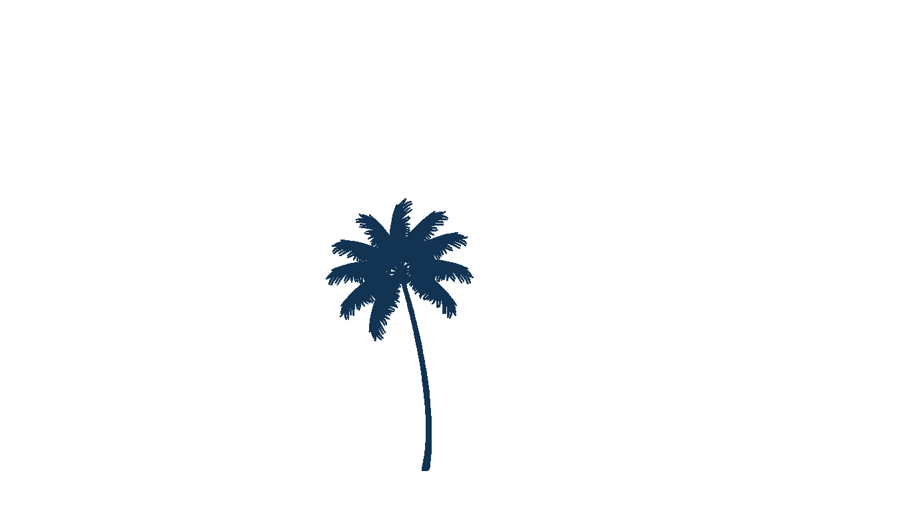
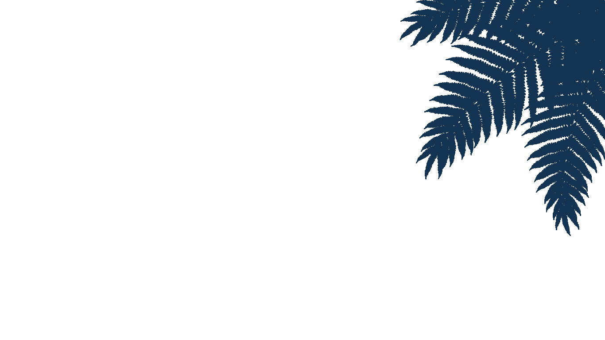
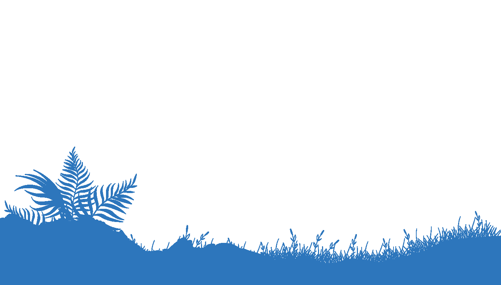

.png)




Welcome to NeoSphere: The City of 2050
NeoSphere 2050 is the embodiment of humanity's future: a seamless convergence of cutting-edge technology, regenerative ecology, and rich, dynamic culture. Born from the lessons of the climate crisis, this metropolis operates as a living, learning entity, constantly optimizing itself for the well-being of its inhabitants and the planet. We invite you to explore the facets of a city where quantum computing powers personalized healthcare, and every building actively contributes to a net-positive carbon footprint.
Life here is defined by harmony and purpose. The city's infrastructure is managed by a Distributed Autonomous Intelligence Network (DAIN), which ensures flawless logistics, energy efficiency, and resource allocation. This unprecedented level of automation has liberated citizens from routine labor, allowing society to dedicate its focus toward innovation, creative pursuits, and deep community engagement. The result is a society where human potential is the primary resource.
A New Era of Sustainable Living
Our foundational principle is **Ecological Restoration**. NeoSphere operates under a strict Circular Economy Mandate, meaning the concept of "waste" has become obsolete. Food is grown in vertical aeroponic farms, water is continuously recycled through bio-filtration systems, and all energy is derived from clean, localized fusion and kinetic sources. Our architecture is bio-integrated, with structures designed to sequester carbon and provide habitats for local wildlife, actively reversing the damage of the past century.
Beyond technology and sustainability, NeoSphere thrives on its **diverse and fluid culture**. Identity is celebrated through dynamic, personalized art and fashion, and education is a continuous, immersive experience guided by personalized AI mentors. This combination of ecological responsibility, technological advancement, and a vibrant cultural sphere makes NeoSphere not just a place to live, but a thriving model for humanity's next chapter.